Итак, мы отметили, что благодаря политическим и дипломатическим интригам Франции удалось договориться с Портой о привилегированном положении своего флага в Леванте. Не забывая о своем обещании рассказать, как это произошло, сейчас хотел бы остановиться на одном по сути техническом вопросе: а как же выглядел французский флаг, под которым в XVI веке бороздили Восточное Средиземноморье все торговые корабли Европы?
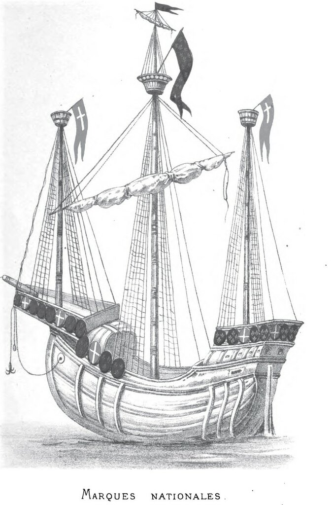
Мы уже говорили, что впервые национальные флаги на кораблях появились во время крестовых походов (Клейрак). Там мы, в частности, отметили, что перед первым крестовым походом красный крест на свой флаг получила Англия, и при этом не словом не обмолвились о том, что получил французский король. Я об этом ничего не знаю, поэтому и ничего не сказал про Францию. Первую документальную информацию о французском национальном флаге мы получаем от средневекового английского историка Роджера Ховеденского (умер в 1201 году), в книге которого «Деяния Генриха II и деяния короля Ричарда» (Gesta Henrici II et Gesta Regis Ricardi) описана встреча короля Франции Филиппа II Августа, короля Англии Генриха II и графа Фландрии Филиппа I Эльзасского накануне Третьего крестового похода. Встреча состоялась в нормандском городе Жизор в 1188 году. Монархи договорились о распределении цветов, которыми будут окрашены кресты на знаменах и одежде каждого из национальных контингентов:
…prædicti Reges in susceptione Crucis, ad cognoscendam gentem suam, signum evidens sibi et suis providerunt. Rex namque Franciæ et gens sua susceperunt Cruces rubeas, et Rex Angliæ cum gente sua suscepit Cruces albas. et Philippus Comes Flandriæ suscepit Cruces virides.
(Цит. по Дюканжу: Du Cange. Glossarium… статья Crux.)
Вышепоименованные монархи, приняв крест, в целях распознавания своих национальных контингентов назначили распознавательные признаки для себя и своих людей. Король Франции и его люди должны носить красные кресты; король Англии и его воины – белые кресты; в то время как Филипп, граф Фландрии, со своими людьми получил зеленые кресты.
О традиции «принятия креста» перед крестовыми походами в сети есть очень интересная статья В.Л. Портных «Символизм креста в проповедях крестовых походов XIII в.» Интересные подробности о интересующем нас событии можно найти в книге Г. Мишо История крестовых походов. Для любознательных приведу небольшой из нее отрывок, относящийся к интересующему нас событию:
Вильгельм, архиепископ Тирский, прибывший с востока, чтобы испросить помощь князей, был уполномочен папой проповедовать священную войну. Прежде всего он обратился к народам Италии, а потом поехал во Францию; он явился на собрание, созванное близ Жизора Генрихом II, английским королем, и Филиппом-Августом, королем французским. По прибытии Вильгельма Тирского оба эти короля, находившиеся в войне за Вессень, заключили мир. Епископ Святой земли прочел во всеуслышание, в присутствии собравшихся князей и рыцарей, донесение о взятии Иерусалима Саладином, и при описании этого бедствия все присутствовавшие рыдали. Оратор начал убеждать верующих принять крест; он представил им страдания христиан, изгнанных из их жилищ, лишенных имущества, скитающихся среди азиатского населения, не имея где приклонить голову; он упрекал князей и рыцарей, допустивших похитить наследие Иисуса Христа, забывших христианское государство, основанное их отцами; он упрекал их в том, что они ведут войны между собой из-за границ провинции или берегов реки, между тем как неверные победоносно попирают царство Иисуса Христа. Эти увещания растрогали все сердца. Непримиримые до того враги, Генрих II и Филипп-Август, со слезами обняли друг друга и приняли крест. Ричард, сын Генриха и герцог Гиеньский, Филипп, граф Фландрский; Гуго, герцог Бургундский; Генрих, граф Шампаньский; Тибо, граф Блуаский; Ротру, граф Першский; графы Суассонский, Неверский, Барский и Вандомский, братья Иосцелин и Матье де Монморанси, множество баронов и рыцарей, несколько епископов и архиепископов французских и английских дали клятву освободить Иерусалим. Все собрание повторяло слова «Крест! Крест!», и на этот крик, призывающий к войне, отозвались все провинции. Энтузиазм Крестового похода овладел всей Францией и всеми соседними странами.
Но вернемся к цветам крестов, полученных различными национальными контингентами. У меня создалось впечатление, что достигнутая договоренность имела одноразовый характер и не распространялась на дальнейшую историю. Действительно, ранее мы отмечали, что до встречи в Жизоре у англичан был красный крест, а не белый. И после третьего крестового похода этот же факт отмечается практически во всех документальных источниках. Об этом, в частности, пишет в своих Хрониках Фруассар, рассказывая о морском бое 1342 года и о прибытии в Авиньон в 1363 г. короля Джона, который « emprit et enchargea dessus son derrain vêtement la vermeille croix». И во времена войн между армиями французского короля Карла V и англичан противники для распознавания «свой-чужой» носили кресты, только это были красные кресты у англичан и белые – у французов. Когда и по какой причине произошло это изменение символики мы не знаем. Но замечаем белые кресты и на знаменах выдающегося французского военачальника времен Столетней войны Бертрана дю Геклена (Bertrand du Guesclin) во время его похода в Испанию. В некоторых источниках по этой причине армию дю Геклена в том походе называют иногда la blanche Compagnie (Белое войско): воины носили на своих плечах белые кресты. (Anciens mémoires sur Du Guesclin, 1824, p. 337).
И в 1380 г. англичане, сражаясь в Пуату против того же дю Геклена имели красные кресты на своих белых плащах-«сюрко».
Однако ни в Хрониках Фруассара, ни у более поздних хронистов мы не находим изображение крестов на знаменах и штандартах того времени. Правда, корабли, изображенные на картах знаменитого Каталанского атласа (1375 г.),
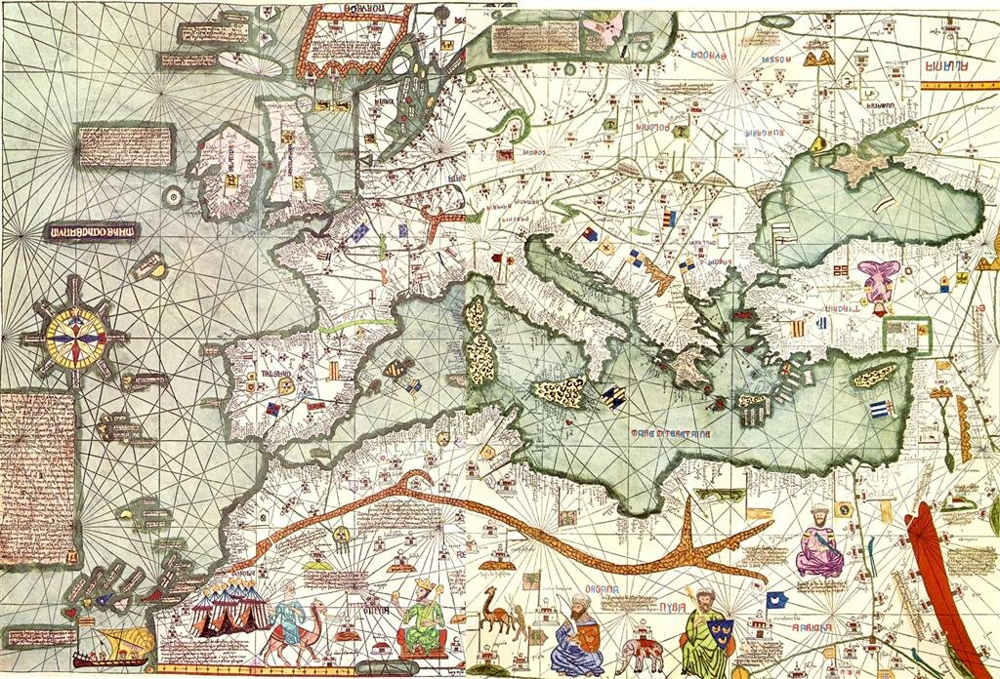
уже несут национальные флаги с изображением креста, в частности, объекта нашего внимания – Иерусалимского креста
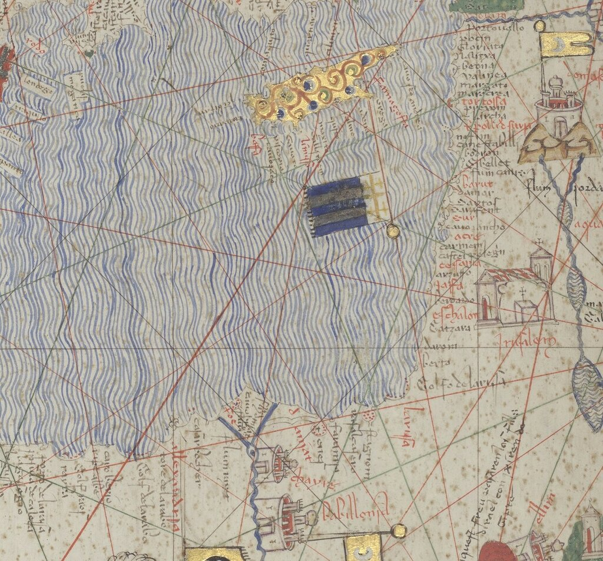
Но это то исключение, которое подтверждает правило. Лишь в XV веке появляются многочисленные изображения с крестами на флагах, в числе которых и флаги с белыми крестами.
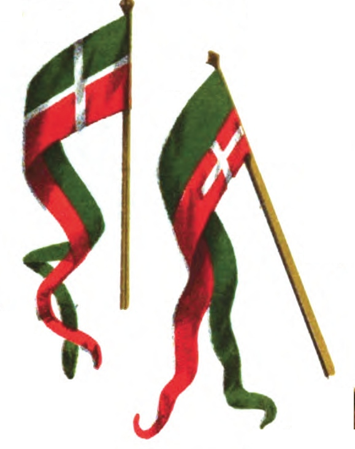
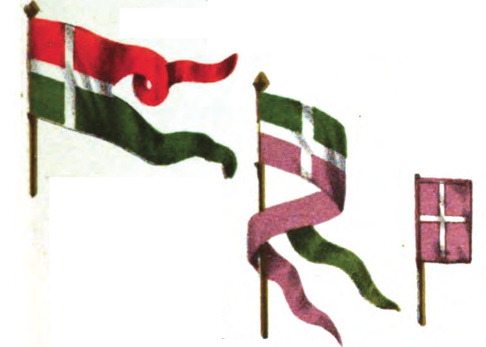
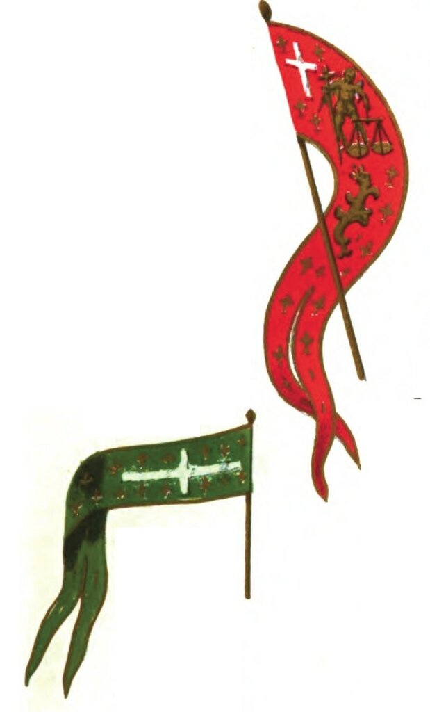
У французов того времени существует твердое правило: не помещать белый крест на поле с гербами. Так, в XVI веке практически нет знамен, где белый крест нанесен на синее поле с королевскими лилиями.
Таким образом, белый крест становится почти исключительно принадлежностью французских флагов. В то время, как красный крест на белом фоне является прерогативой кораблей английского короля.
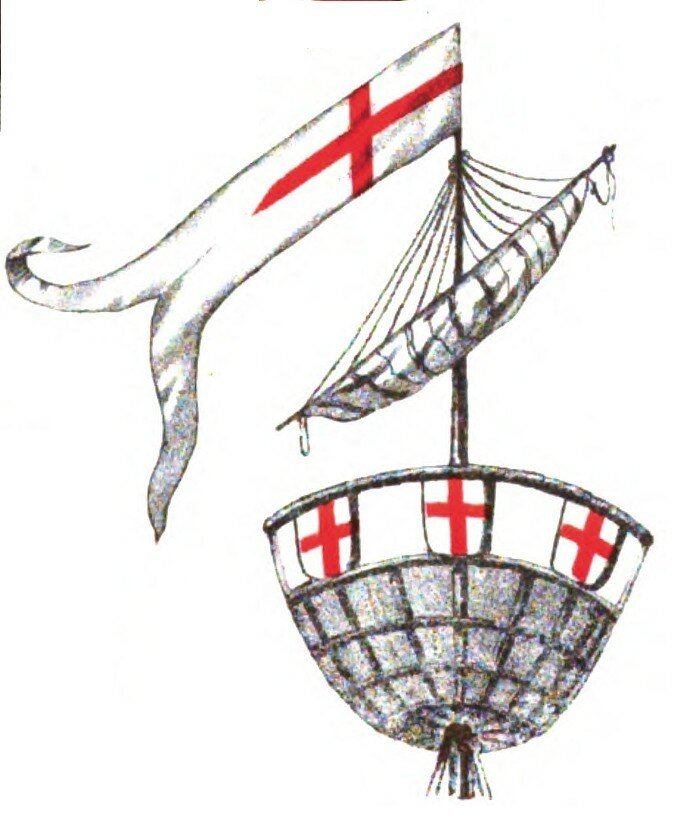
Красный крест на белом фоне являлся необходимой принадлежностью английских кораблей вплоть до XVIII века, он помещался на так называемый «флаг английского народа»,
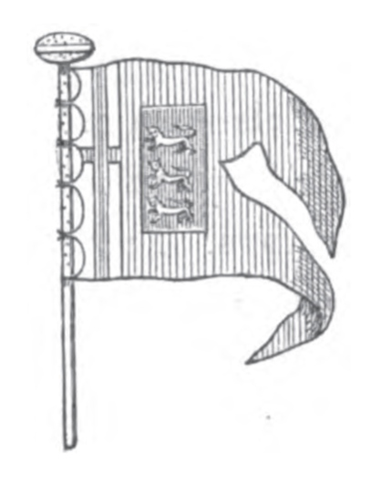
который кардинально отличался от английского королевского флага.
Отметим тот факт, что в рукописях конца XIV-XV веков, описывающих первые крестовые походы, французские флаги начала эпохи крестоносного движения изображаются уже не с красным крестом на белом фоне, как они описаны современниками, а по новой традиции – с белыми крестами на красном фоне.
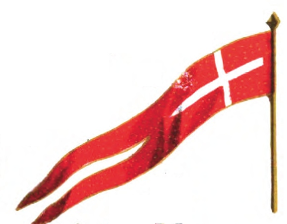
Достаточно взглянуть на миниатюры XVI века из Жития Св. Людовика (« Le Livre des faiz monseigneur saint Loys »), чтобы твердо убедиться в этом
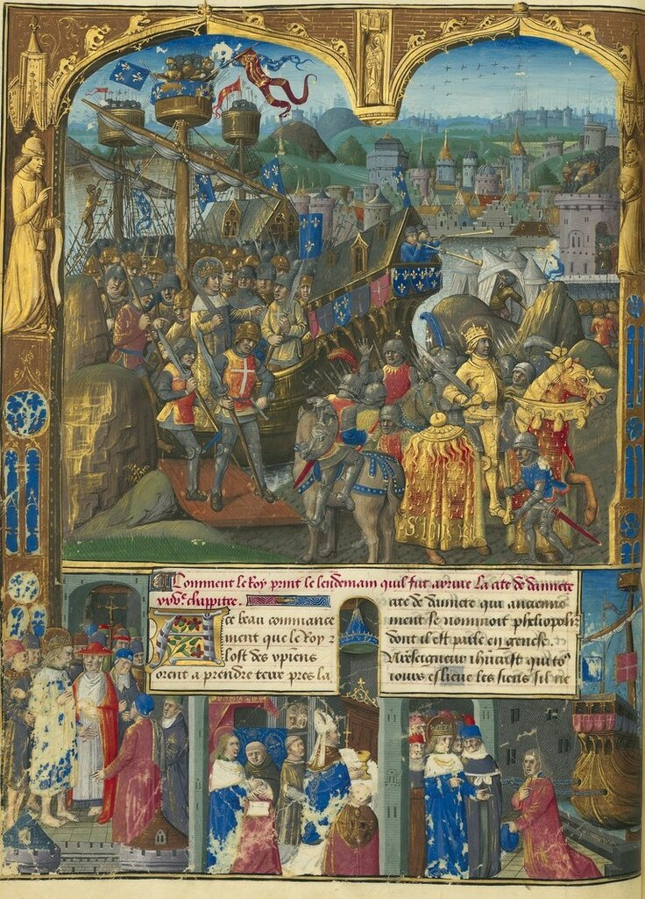
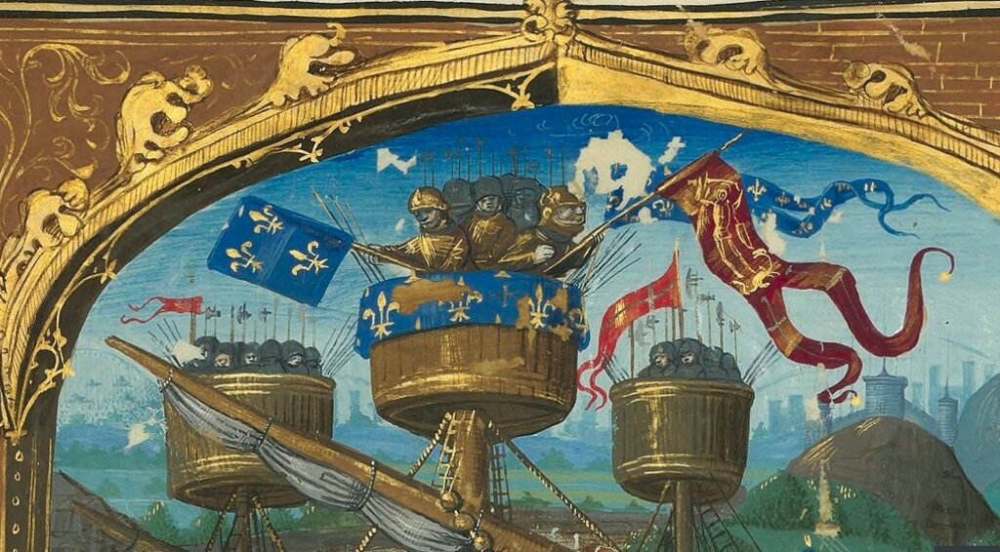
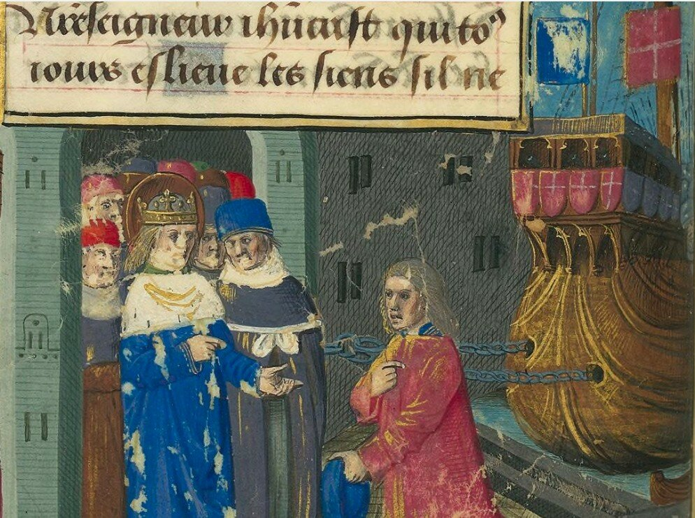
Чтобы не перегружать пост, рассказ о становлении французского морского флага, под которым ходили все европейские торговые суда в Леванте, продолжим в следующий раз.